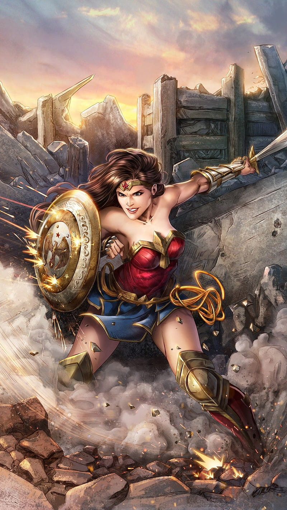

Who Is Wonder Woman?
Wonder Woman is Diana of Themyscira. She has incredible strength and speed, but she also uses compassion, honesty, and the Lasso of Truth to solve problems.
Challenges and Victories
- Left her protected island home to defend a world she barely knew.
- Fought Ares and continued believing that people could choose peace.
- Defeated powerful mythological monsters and gods.
- Became a founding member and leader of the Justice League.
Why I Chose Her
I chose Wonder Woman because she combines enormous strength with compassion. She fights when necessary, but her true goal is always peace.
BAM!